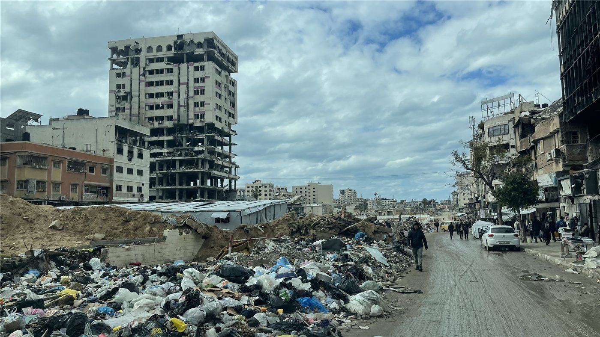

가자 재건, 700억 달러 산 앞에 170억 모였다… '하마스 무장 해제'라는 정치 난제도
가자 재건이 본격 논의되고 있다. UN은 복구 비용을 약 700억 달러로 추산하지만, 미국 등 10개국이 지금까지 약속한 금액은 170억 달러다. 인도적 통로 운영과 하마스 무장 해제라는 정치적 과제가 재건과 맞물려 있다.
주유민 기자 · 2026.06.16
橋국제

가자지구가 안정화와 재건이라는 거대한 과제 앞에 서 있다고 미들이스트인스티튜트 등이 전했다. UN은 복구 비용을 약 700억 달러로 추산하는데, 미국을 비롯한 10개국이 지금까지 약속한 구호·재건 자금은 총 170억 달러다.
광고 문의 · 300×250물자 반입은 제한적인 통로로 이뤄지고 있다. 이스라엘은 3월 케렘샬롬 통로를 인도적 물자의 유일한 운영 통로로 재개했고, 라파 통로는 보행자에 한해 부분 재개한다고 밝힌 바 있다.
재건은 정치와 분리되지 않는다. 가자 안정화 과제에는 하마스의 무장 해제가 함께 걸려 있어, 무기 처리 방식과 통치 구조를 둘러싼 합의 없이는 대규모 자금 집행이 지연될 수 있다.
이스라엘은 레바논·시리아·가자 일부 지역에 대한 통제를 '무기한' 유지하겠다는 뜻을 내비쳤다. 약 1천 평방킬로미터에 이르는 점유지의 처리는 재건과 별개로 지역 안정의 또 다른 변수다.
결국 700억 달러의 산을 넘으려면 자금 약속이 실제 집행으로 이어지고, 무장 해제·통치·통로 운영이라는 정치 퍼즐이 함께 맞춰져야 한다. 재건의 속도는 돈만큼이나 정치에 달려 있다.
출처·참고 (사실 확인용 — 본문은 직접 재작성)
· Middle East Institute 등 종합
· AP
· Middle East Institute 등 종합
· AP